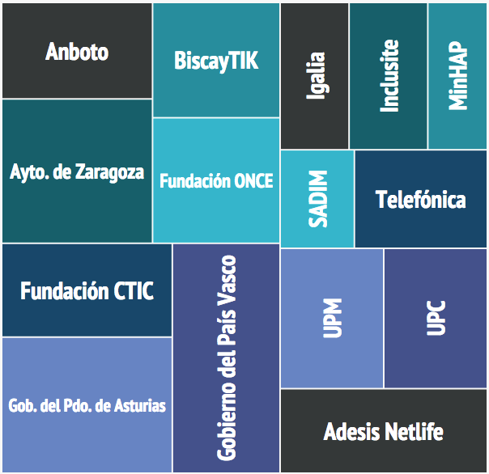

Estándares Web
en la industria editorial
Sevilla, 26 Febrero 2015
Un mundo en constante cambio
25 años de Web
(pre)Historia de la Web

La "Web" en 1989

(1989) El primer boceto

La Web en 1990

(1990) WorldWideWeb

La Web crece

¿W3C?
World Wide Web Consortium
- Organismo neutro
- Fundado en 1994 por Tim Berners-Lee
- 82 personas en el Team
- 382 Miembros
- +70 Grupos del W3C (con más de 1.500 investigadores)
- Relaciones con otros organismos estandarizadores
{kind=link}
4.632 personas en los grupos de comunidad del W3C
Realmente WorldWide

Miembros en España

W3C.es @ CTIC
¿Qué hace el W3C?
Voice WebCGM PICS HTMLTidy Databinding WebOntology HTML CompoundDocumentFormats SPARQL WAI Web APIs Libwww PatentPolicy OWL TimedText XMLEncryption Multimodal XML RichWebClients XMLProcessing DeviceIndependence URI/URL DOM HTTP Accessibility RDF WebApplicationFormats XMLBase Jigsaw XLink I18N P3P QualityAssurance XMLKeyManagement UbiquitousWeb InkML Incubator XPath WebServices XForms CSS SOAP Mobile SMIL Rules SVG Amaya SemanticWeb MathML
Especificaciones, directrices y herramientas abiertas con la política de patentes más transparente en Internet
+330 Recomendaciones

¿Estándares W3C?
- Ahorro de costes para las empresas
- Cooperación con los mejores expertos de la Web - ahorro de consultorías
- Compartir inversión I+D: más allá de los recursos de una sola organización
- Intercambio de ideas y experiencias
- Las mejores especificaciones gracias a una amplia revisión
- Libres de derechos y gratuitos
- Compartir el coste de las pruebas de desarrollo
¿Cómo se construyen?
Un objetivo único
Acceso universal
...ofrecer la misma información y servicios a los usuarios, independientemente de quienes son, donde están, los sistemas que usan o la forma mediante la que se conectan
Independiente del dispositivo
- PCs, lectores de eBook, teléfonos, TVs, PDAs, dispositivos en electrodomésticos o en automóviles...
- limitación en: ancho de banda, pantalla, colores, sonido...
..."discapacidades" de los usuarios
- distinción de colores, ceguera, ...
- dificultades de manejo de teclados, ratón, ...
- dislexia, dificultades cognitivas o neurológicas, ...
..diferencias culturales, geográficas o lingüísticas
- sentidos de escritura, diferentes tipos de teclados, ...
- formato de fechas, números de teléfono, códigos postales, IDs,...
La Plataforma Web Abierta
HTML5
Vídeo, audio, SVG, WebGL, MathML de forma nativa
- Acceso a los dispositivos (APIs)
- Mejor interacción (ejemplo)
video: brokenp87
CSS
Un ejemplo... Bordes + WOFF
@font-face {
font-family: 'Pretty';
src: url('Pretty.woff') format('woff') ;
}
En un lugar de la Mancha, de cuyo nombre no quiero acordarme, no ha mucho que vivía un hidalgo de los de lanza en astillero, adarga antigua, rocín flaco y galgo corredor.
¿Edición digital y W3C?
Un usuario avanzado
La industria editorial es posiblemente el segundo usuario más importante de las tecnologías W3C después de los tradicionales navegadores
- Casi todas las revistas, periódicos, publicaciones técnicas tienen una versión online
- Las publicaciones académicas necesitan de la Web
- EPUB es, en esencia, un sitio web estático y empaquetado
Expectativas y requisitos
- Calidad de los tipos de fuentes, gráficos,…
- Nuevas formas de publicación basadas en multimedia y con interacción avanzada…
- Publicación de datos asociados a los documentos
En modo "pasivo"
Tradicionalmente esta industria ha permanecido "pasiva" frente las tecnologías Web
- No participación en el desarrollo de tecnologías Web básicas
- Los organismos estandarizadores como W3C apenas conocen estos requisitos
- Web—Editoriales son mundos completamente separados
Consecuencia
Los Grupos de Trabajo del W3C no tienen en cuenta las necesidades de este sector a la hora de establecer las prioridades
:-[
Origen de DPUB @ W3C
Origen de DPUB @ W3C
- (2012) W3C e IDPF organizaron varios talleres para buscar las sinergias
- (2013) W3C crea la Actividad sobre Edición Digital y el IG sobre Edición Digital (DPUB IG)
- Se celebran teleconferencias semanales y
- Reuniones presenciales semestrales (próxima en mayo'15 en NYC)
Misión del DPUB IG
The mission of the Digital Publishing Interest Group (DPUB IG) […] a forum for experts in the digital publishing ecosystem […] for technical discussions, gathering use cases and requirements to align the existing formats and technologies (e.g., for electronic books) with those used by the Open Web Platform […]
Esto, pero explicado
- Los expertos de la industria de la edición digital identifican las carencias de la Plataforma Web Abierta
- Estos requisitos se lanzan a los grupos de trabajo del W3C para actualizar (o desarrollar) las especificaciones
- El DPUB IG tiene grupos especiales que se coordinan con otros grupos de trabajo
Más en el sitio web oficial
¿Quién hace el trabajo?
Todo el mundo trabaja
- IDPF ha estado creando especificaciones basadas en estándares del W3C desde hace más de 15 años
- DPUB IG destaca los problemas de la Plataforma Web Abierta que no cumplen sus necesidades
- Los Grupos de Trabajo del W3C actualizan las especificaciones para reflejar estas necesidades
Grupos especiales dentro de DPUB IG
- Anotaciones
- Diseño y estilos
- Metadatos
- Contenido y etiquetado
- Accesibilidad
- STEM (Science, Technology, Engineering, Maths)
Anotaciones
- Publicados Casos de Uso sobre anotaciones
- Actualmente, el Grupo de Trabajo sobre Anotaciones Web desarrolla un estándar para anotaciones en cualquier documento Web (desde navegadores Web o eBooks)
Maquetación y estilos
- Publicados Casos de Uso de paginación y diseño latino
- Requisitos para impresión y edición digital sobre HTML y CSS usando el alfabeto latino
- Colaborando con el Grupo de Trabajo de CSS para publicar CSS Inline Layout Module Level 3
{kind=link}
Metadatos
- Reuniones con expertos en metadatos de publicación
- Publicado el Informe del Grupo Especial de Metadatos:
- Resumen de las entrevistas
- Descubierto que la OWP tiene herramientas (pero los editores no están familiarizados)
- Ayudar a la industria editorial en el uso de herramientas para implementar vocabularios existentes
Contenido y etiquetado
- Objetivo: estructura lógica estándar sobre (y compatible con) HTML p.e., identificación de distintos tipos de secciones, términos de indexación, glosarios,…
- Trabajando con un Grupo de Trabajo del W3C para extensiones de accesibilidad (ARIA)
- Lista de términos preliminares como módulo de ARIA
- Términos que ofrecen a los elementos HTML significado semántico
- Objetivo: incrementar la accesibilidad
Accesibilidad
STEM
Science, Technology, Engineering, Maths
- Primeras entrevistas con expertos para comprender los puntos críticos
- Preparando una encuesta para refinar esa información
Próximos pasos
- Continuar con los grupos especiales en sus alcances
- Involucrar a los miembros del DPUB IG en la planificación y desarrollo de EPUB-WEB
EPUB-WEB
El futuro de la edición digital
Descrito por IDPF y W3C en
"Advancing Portable Documents for the Open Web Platform: EPUB-WEB"
- Documento en: http://w3c.github.io/epubweb/
- Tu feedback en: https://github.com/w3c/epubweb/issues
EPUB-WEB
Una visión de futuro

Documentos portátiles llevados a la Web
- Evitar distinción entre online (la Web) y lo portátil (EPUB)
- Dicho de una forma sencilla:
- El contenido creado para uso offline puede ser usado directamente con un navegador
- El contenido creado para uso online puede ser guardado para uso offline
Publicación y consumo
- Los editores pueden elegir el modo de publicación
- Los usuarios podrán seleccionar los modos de consumo
- Características esenciales comunes para los modos online y offline
- Referencias cruzadas, anotaciones, acceso a BBDD en línea
- Gestión de derechos de autor y licencias
- …
Ejemplo: un libro en un navegador
Desde el escritorio, leemos un libro como una página Web:
- con enlaces externos al libro
- crear marcadores dentro de una página del libro
- usar plugins y herramientas específicos del navegador
- crear anotaciones
Pero...
- Podemos necesitar poder de computación del equipo (p.e., para contenido 3D interactivo)
- Otras veces necesitaremos usar nuestro lector dedicado para llevarlo a la playa
Todo esto en el mismo libro (sin conversiones entre formatos)
Casos de uso offline y online
- Publicaciones académicas: datos, audio, vídeo, programas, etc.
- Publicaciones inhouse: compañías (IBM, Boeing, Renault, etc.) publican documentos con alta frecuencia de actualización y los necesitan online y offline.
- Archivo y preservación de documentos Web completos
- Materiales educativos: contenido de libros, tareas interactivas, animaciones, aplicaciones para resultados, datos para demos,…
¿Cómo conseguimos esto (técnicamente)?
Retos tecnológicos
- Formato de empaquetado adaptado a las necesidades de la Web (p.e., streaming), ver borrador de trabajo Packaging on the Web
- Estructura de los documentos: la estructura actual de EPUB3 (p.e., la portada) puede ser adaptado a los navegadores Web y permitirá interacción con los usuarios
- Identificación: IDs para los documentos en la Web, IDs para los fragmentos dentro de los documentos
Retos tecnológicos
- Metadatos: uso de métodos de la Web para identificar, describir documentos EPUB-WEB
- Mejoras en estilos y paginación
- Seguridad, control de acceso y privacidad
- Control de presentación: personalización del usuario (p.e., tamaño de fuente)
DPUB IG y EPUB-WEB
Grupos dedicados ya trabajan sobre algunos de estos retos
- El grupo contribuirá a la formulación de los requisitos para EPUB-WEB
Posiblemente se creen nuevos grupos especiales - EPUB-WEB guiará el trabajo del grupo
Sin embargo…
- EPUB-WEB no sustituye EPUB3 (ni al próximo EPUB3.1)
- Muchas de las nuevas características serán parte del EPUB3.1 (p.e., la estructura semántica)
Se espera una convergencia entre las especificaciones EPUB3.x y EPUB-WEB
Referencias
- DPUB IG Wiki
- https://www.w3.org/dpub/IG/wiki/Main_Page
- EPUB-WEB White paper
- http://w3c.github.io/epubweb/
- EPUB-WEB Issues
- https://github.com/w3c/epubweb/issues
- Presentación original
- http://w3c.github.io/dpub/ebookcraft-2015-03/
Muchas gracias
- Escríbenos:
- martin@w3.org
- @espinr
- Esta presentación:
- http://www.w3c.es/Presentaciones/2015/0226-PublicacionDigital-MA